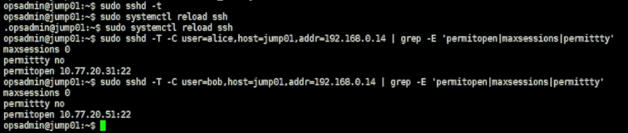
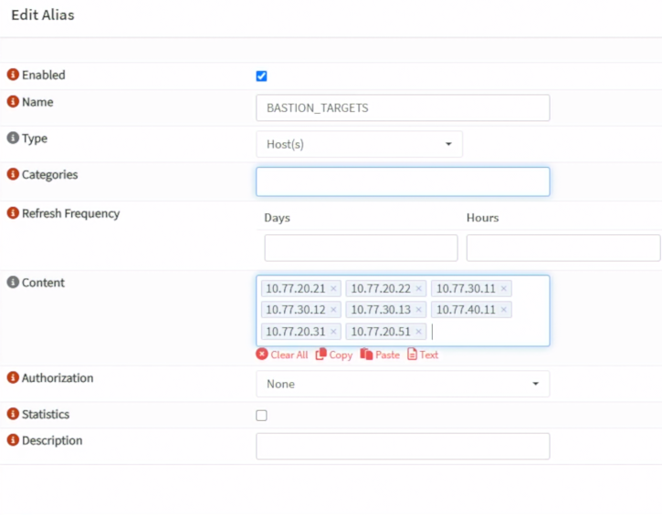
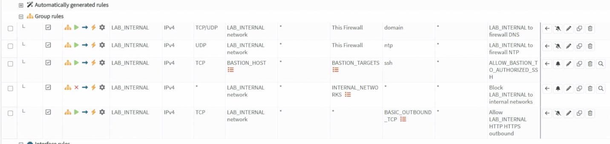
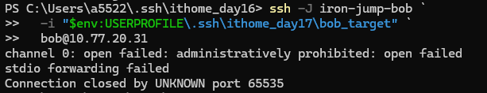

Day 16｜SSH 跳板機的部署與權限設計（下）：ProxyJump 與多人權限隔離
對應文章：Day 16｜SSH 跳板機的部署與權限設計（下）：ProxyJump 與多人權限隔離
本日建立兩台最小化 Guest VM 作為 SSH 管理目標：Alice 只能管理 app01，Bob 只能管理 monitor01。一般使用者不登入 pve01～pve03，也不透過 Day 16 取得 PVE Web UI 權限；PVE Web UI 會在 Day 17 由獨立 VPN-Admin 路徑處理。
1. 本日連線關係
Alice
→ jump01 的 alice 無 Shell 帳號
→ 只允許 Forward 到 app01 10.77.20.31:22
→ app01 再次驗證 Alice 的 Target Key
Bob
→ jump01 的 bob 無 Shell 帳號
→ 只允許 Forward 到 monitor01 10.77.20.51:22
→ monitor01 再次驗證 Bob 的 Target Key
app01 會在 Day 25 安裝 Web Backend；monitor01 會在 Day 29 安裝監控服務。Day 16 只提前建立作業系統、SSH 帳號與網路，不提前安裝後續服務。
2. 建立 app01
app01 使用 VMID 211，放在 pve02。
- 在 PVE Web UI 找到 Debian 13 Cloud-Init Template。
- 右鍵選
Clone。 Mode選Full Clone。Target Node選pve02。VM ID填211，Name 填app01。- Storage 使用目前 VM 共用的
ceph-vm；若你的 Template 仍在 Local Storage，先將 Full Clone 建在可用 Storage，再依既有遷移流程移到 pve02。 - Clone 完成後先不要啟動。
- 到 VM 211 →
Hardware，CPU 設 1 Core、Memory 設 1024 MiB。 - 選取
Hard Disk (scsi0)，先記下目前容量，再按Disk Action→Resize。 - app01 的目標容量為 12 GiB。GUI 的
Size Increment (GiB)填的是「增加量」：若目前是 3 GiB 就填9；若目前是 8 GiB 就填4；若已經是 12 GiB 或更大則不要 Resize。 - Network Device 使用
vmbr1，VLAN Tag 填20。 - 到
Cloud-Init，User 保留 Template 的labadmin。本次 Lab 沿用你目前設定的管理密碼，SSH public key不強制填寫；密碼不要寫入文件或截圖。 - IP 設
10.77.20.31/24，Gateway 設10.77.20.1。 - DNS 設
10.77.20.1，Search Domain 設lab.home。 - 按
Regenerate Image，再啟動 VM。
Proxmox VE 的 GUI Resize 欄位填增加量，不是最終容量。若 GUI 不方便操作，可以在 VM 211 所在節點先確認磁碟名稱，再以 CLI 將它擴大至最終 12 GiB：
qm config 211 | grep '^scsi0:'
qm disk resize 211 scsi0 12G
若 Template Disk 已大於原規劃的 12 GiB，直接保留，不要嘗試縮小磁碟。正式環境仍建議使用個人 SSH 公私鑰，避免使用共用密碼；本次 Lab 先依目前的密碼方式完成部署。
從 VM 211 Console 登入後執行：
sudo hostnamectl set-hostname app01
sudo apt update
sudo apt install -y openssh-server
lsblk
df -h /
ip -br address
ip route
確認：
hostnamectl --static
ip neigh show 10.77.20.1
getent ahostsv4 deb.debian.org
curl -4I --connect-timeout 10 https://deb.debian.org/
sudo apt update
目前 Day 14 的最小權限規則只允許 DNS、NTP、HTTP 與 HTTPS，沒有允許 Service VLAN 對 Gateway 或 Internet 的 ICMP。因此 ping 10.77.20.1／ping 1.1.1.1 失敗可以是預期結果，不能單獨判定沒有網路；本系列以 ARP Neighbor、DNS、HTTPS 與 APT 結果確認對外連線。
3. 建立 monitor01
monitor01 使用 VMID 251，同樣先放在 pve02。
- 右鍵 Debian 13 Cloud-Init Template →
Clone。 Mode選Full Clone，Target Node 選pve02。- VM ID 填
251，Name 填monitor01。 - Storage 使用 pve02 的
local-lvm。monitor01 是單台監控 VM，後續 Prometheus 資料會持續成長，本系列不拿它做 PVE HA／Migration 示範，因此不占用容量有限的ceph-vm。 - CPU 設 2 Core，Memory 設 2048 MiB。
- 選取
Hard Disk (scsi0)→Disk Action→Resize，將最終容量擴大到 24 GiB。若目前是 3 GiB，GUI 的Size Increment (GiB)填21；若容量不同，以24－目前容量計算增加量；已達 24 GiB 或更大則不要 Resize。 - Network Device 使用
vmbr1，VLAN Tag 填20。 - Cloud-Init IP 設
10.77.20.51/24，Gateway 設10.77.20.1。 - DNS 設
10.77.20.1，Search Domain 設lab.home。 - User 保留
labadmin，本次沿用目前的管理密碼，SSH public key不強制填寫。按Regenerate Image後啟動。
CLI 的最終容量寫法如下：
qm config 251 | grep '^scsi0:'
qm disk resize 251 scsi0 24G
若 Template Disk 已超過原規劃的 24 GiB，同樣保留現況，不縮小。正式環境建議改用個人 SSH 公私鑰，本次 Lab 的管理密碼只作為目前部署方式。
登入 VM 251 Console：
sudo hostnamectl set-hostname monitor01
sudo apt update
sudo apt install -y openssh-server
hostnamectl --static
lsblk
df -h /
ip -br address
ip route
ip neigh show 10.77.20.1
getent ahostsv4 deb.debian.org
curl -4I --connect-timeout 10 https://deb.debian.org/
4. 在 Windows 建立四把 Key
每位使用者各有一把 Bastion Key 與一把 Target Key。Private Key 全部只留在 Windows，不放到 jump01。
$Day16KeyDirectory = Join-Path $env:USERPROFILE '.ssh\ithome_day16'
New-Item -ItemType Directory -Force -Path $Day16KeyDirectory | Out-Null
ssh-keygen -t ed25519 -a 100 -f "$Day16KeyDirectory\alice_bastion" -C 'alice@jump01'
ssh-keygen -t ed25519 -a 100 -f "$Day16KeyDirectory\alice_target" -C 'alice@app01'
ssh-keygen -t ed25519 -a 100 -f "$Day16KeyDirectory\bob_bastion" -C 'bob@jump01'
ssh-keygen -t ed25519 -a 100 -f "$Day16KeyDirectory\bob_target" -C 'bob@monitor01'
四次都完成後確認：
Get-ChildItem $Day16KeyDirectory
沒有 .pub 的檔案是 Private Key，不可貼到伺服器或提交 Git。
5. 建立 jump01 的無 Shell 帳號
從 VM 231 Console 登入 jump01，先確認：
hostnamectl --static
必須顯示 jump01，再執行：
sudo groupadd --system bastion-proxy
sudo useradd -m -U -s /usr/sbin/nologin -G bastion-proxy alice
sudo useradd -m -U -s /usr/sbin/nologin -G bastion-proxy bob
sudo usermod -p "$(openssl passwd -6 "$(openssl rand -base64 48)")" alice
sudo usermod -p "$(openssl passwd -6 "$(openssl rand -base64 48)")" bob
for user in alice bob; do
sudo install -d -m 700 -o "$user" -g "$user" "/home/$user/.ssh"
sudo install -m 600 -o "$user" -g "$user" /dev/null "/home/$user/.ssh/authorized_keys"
done
5.1 安裝 Alice Bastion Key
Windows：
$Day16KeyDirectory = Join-Path $env:USERPROFILE '.ssh\ithome_day16'
Get-Content "$Day16KeyDirectory\alice_bastion.pub" | Set-Clipboard
jump01：
sudoedit /home/alice/.ssh/authorized_keys
sudo chown alice:alice /home/alice/.ssh/authorized_keys
sudo chmod 600 /home/alice/.ssh/authorized_keys
5.2 安裝 Bob Bastion Key
Windows：
Get-Content "$Day16KeyDirectory\bob_bastion.pub" | Set-Clipboard
jump01：
sudoedit /home/bob/.ssh/authorized_keys
sudo chown bob:bob /home/bob/.ssh/authorized_keys
sudo chmod 600 /home/bob/.ssh/authorized_keys
6. 在目標 VM 建立個人帳號
6.1 app01 建立 Alice
進入 VM 211 Console，確認 Hostname 是 app01：
sudo useradd -m -U -s /bin/bash alice
sudo usermod -p "$(openssl passwd -6 "$(openssl rand -base64 48)")" alice
sudo install -d -m 700 -o alice -g alice /home/alice/.ssh
sudo install -m 600 -o alice -g alice /dev/null /home/alice/.ssh/authorized_keys
Windows 複製 Target Public Key：
Get-Content "$Day16KeyDirectory\alice_target.pub" | Set-Clipboard
app01 貼入並修正權限：
sudoedit /home/alice/.ssh/authorized_keys
sudo chown alice:alice /home/alice/.ssh/authorized_keys
sudo chmod 600 /home/alice/.ssh/authorized_keys
Alice 不加入 sudo 群組。
6.2 monitor01 建立 Bob
進入 VM 251 Console，確認 Hostname 是 monitor01：
sudo useradd -m -U -s /bin/bash bob
sudo usermod -p "$(openssl passwd -6 "$(openssl rand -base64 48)")" bob
sudo install -d -m 700 -o bob -g bob /home/bob/.ssh
sudo install -m 600 -o bob -g bob /dev/null /home/bob/.ssh/authorized_keys
Windows：
Get-Content "$Day16KeyDirectory\bob_target.pub" | Set-Clipboard
monitor01：
sudoedit /home/bob/.ssh/authorized_keys
sudo chown bob:bob /home/bob/.ssh/authorized_keys
sudo chmod 600 /home/bob/.ssh/authorized_keys
Bob 同樣不加入 sudo 群組。
7. 限制 jump01 的轉送目的地
編輯 Day 15 建立的 /etc/ssh/sshd_config.d/20-bastion-hardening.conf，將：
AllowUsers opsadmin
改為：
AllowUsers opsadmin alice bob
建立 /etc/ssh/sshd_config.d/30-bastion-users.conf：
Match User alice
AuthenticationMethods publickey
AllowTcpForwarding local
PermitOpen 10.77.20.31:22
PermitTTY no
MaxSessions 0
X11Forwarding no
AllowAgentForwarding no
Match User bob
AuthenticationMethods publickey
AllowTcpForwarding local
PermitOpen 10.77.20.51:22
PermitTTY no
MaxSessions 0
X11Forwarding no
AllowAgentForwarding no
檢查後 Reload：
sudo sshd -t
sudo systemctl reload ssh
sudo sshd -T -C user=alice,host=jump01,addr=192.168.0.14 | grep -E 'permitopen|maxsessions|permittty'
sudo sshd -T -C user=bob,host=jump01,addr=192.168.0.14 | grep -E 'permitopen|maxsessions|permittty'
Alice 必須顯示 10.77.20.31:22，Bob 必須顯示 10.77.20.51:22。

圖（一）Alice 與 Bob 分別套用自己的 PermitOpen 目標，且 PermitTTY 為 no、MaxSessions 為 0。
8. 更新 OPNsense BASTION_TARGETS
8.1 更新 Alias
- 進入
Firewall→Aliases。 - 編輯既有
BASTION_TARGETS。 - 在原內容之外加入
10.77.20.31與10.77.20.51。 - 按
Save，再按Apply。

圖（二）將 app01 與 monitor01 加入 BASTION_TARGETS Alias。
不要加入 pve01～pve03，也不要把整個 Management 或 Service Network 放進 Alias。
8.2 啟用 Bastion SSH Rule
- 進入
Firewall→Rules，按右下角橘色+。 - Interface 選
LAB_INTERNAL。 - Action 選
Pass，Direction 選in，Quick 保持勾選。 - Version 選
IPv4，Protocol 選TCP。 - Source 選
BASTION_HOST。 - Destination 選
BASTION_TARGETS。 - Destination Port 填
22。 - 勾選 Log，Description 填
ALLOW_BASTION_TO_AUTHORIZED_SSH。 - Save 後將規則移到
Block LAB_INTERNAL to internal networks上方。 - 按
Apply。
在 jump01 確認網路層：
nc -vz 10.77.20.31 22
nc -vz 10.77.20.51 22

圖（三）ALLOW_BASTION_TO_AUTHORIZED_SSH 位於內部網段封鎖規則之前。
9. 建立 Windows SSH Config
$SshConfig = Join-Path $env:USERPROFILE '.ssh\config'
if (-not (Test-Path $SshConfig)) {
New-Item -ItemType File -Path $SshConfig | Out-Null
}
$CurrentWindowsUser = whoami
icacls $SshConfig /inheritance:r
icacls $SshConfig /grant:r "${CurrentWindowsUser}:(F)"
notepad $SshConfig
加入：
Host iron-jump-alice
HostName 192.168.0.84
Port 45222
User alice
IdentityFile ~/.ssh/ithome_day16/alice_bastion
IdentitiesOnly yes
Host app01-via-jump
HostName 10.77.20.31
User alice
IdentityFile ~/.ssh/ithome_day16/alice_target
IdentitiesOnly yes
ProxyJump iron-jump-alice
ForwardAgent no
Host iron-jump-bob
HostName 192.168.0.84
Port 45222
User bob
IdentityFile ~/.ssh/ithome_day16/bob_bastion
IdentitiesOnly yes
Host monitor01-via-jump
HostName 10.77.20.51
User bob
IdentityFile ~/.ssh/ithome_day16/bob_target
IdentitiesOnly yes
ProxyJump iron-jump-bob
ForwardAgent no
若 fw01 WAN 位址已改變，只修改兩個 iron-jump-* 的 HostName。
10. 驗證
Alice 正向測試：
ssh app01-via-jump
登入後應顯示 app01／alice。
Bob 正向測試：
ssh monitor01-via-jump
登入後應顯示 monitor01／bob。
Alice 嘗試 Bob 的目標：
ssh -vv -J iron-jump-alice `
-i "$env:USERPROFILE\.ssh\ithome_day16\alice_target" `
alice@10.77.20.51
Bob 嘗試 Alice 的目標：
ssh -vv -J iron-jump-bob `
-i "$env:USERPROFILE\.ssh\ithome_day16\bob_target" `
bob@10.77.20.31
兩項負向測試都應由 jump01 顯示 administratively prohibited 或 open failed。

圖（四）Bob 嘗試存取未授權的 app01 時，由 jump01 以 administratively prohibited 拒絕。
圖中的 ithome_day17 是系列天數調整前建立的本機資料夾名稱，不影響既有測試結果；本文件中的示範路徑統一使用 ithome_day16。
最後確認兩個人不能取得 jump01 Shell：
ssh iron-jump-alice
ssh iron-jump-bob